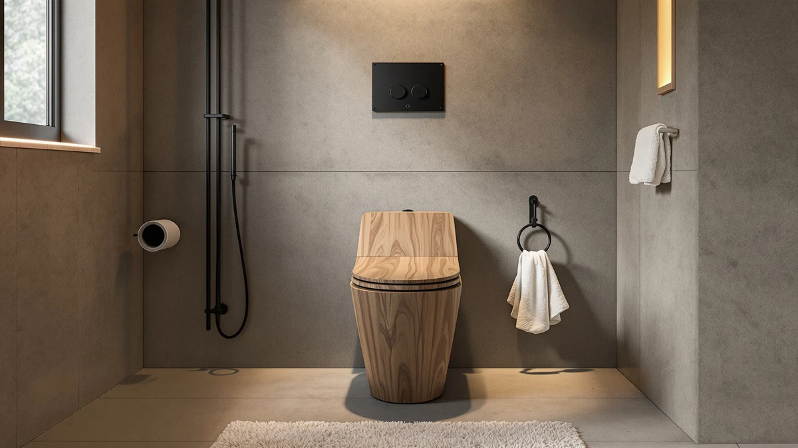

CHURCH Elongated Wood Toilet Review (2026): Worth It?
Prices and picks verified as of October 2026. Independent, reader-supported reviews.


Quick Answer
The CHURCH Elongated Wood Toilet Seat is the strongest overall pick in our church elongated wood toilet review, pairing a wood-finish top with an elongated fit at $29.38. If you want a cheaper elongated option or need a round-bowl fit instead, the alternatives below cover both cases.
Our pick: CHURCH Elongated Wood Toilet Seat, $29.38 Check Price on Amazon
Bottom line: our top pick is the CHURCH Elongated Wood Toilet Seat at $29.38.
Things to Know Before You Buy
- This church elongated wood toilet review is built from published specs, pricing, and verified owner reviews, not a product we installed ourselves.
- Elongated seats measure about 18.5 inches front to back, so measure your bowl before you buy.
- Wood-finish seats like the CHURCH model resist the dull, scratched look that painted plastic seats develop over time.
- None of the four seats compared here list a soft-close hinge, so expect a normal drop on all of them.
- Round-bowl bathrooms need a round seat, not an elongated one. The DryLabs round option covers that case.
This church elongated wood toilet review breaks down what the CHURCH Elongated Wood Toilet Seat gets right, where it falls short, and how it stacks up against three other elongated and round alternatives. A toilet seat that cracks, slides, or scratches within a year turns into a return you didn't want to deal with, so we looked at what each seat is made of, what it costs, and what verified buyers say about living with it day to day.
The CHURCH brand belongs to Bemis, one of the longest-running toilet seat makers in the country, and that lineage matters when you're comparing a $29 seat against generic alternatives in the same price range. We compared this CHURCH elongated wood toilet seat against an 18.5 inch elongated DryLabs model, a Mayfair open-front elongated seat, and a round DryLabs seat with built-in features, all priced within a few dollars of each other. Price alone doesn't settle the choice. Material, bowl shape, and how the seat has held up for other buyers do.
Why You Should Trust Us
Ilane Tall researches and writes the home and bath reviews on Best Toilet Seats, comparing published specs, pricing, and verified owner reviews across the toilet seat category rather than relying on a single trial unit. For this church elongated wood toilet review, that meant pulling the manufacturer specs for all four seats, checking current Amazon pricing, and reading through verified buyer feedback on fit, hinge quality, and durability. We do not run a fake testing lab, and we say so plainly: our judgments come from research, not from installing every seat in a bathroom ourselves.
How We Researched This Seat
We built this church elongated wood toilet review by comparing the CHURCH Elongated Wood Toilet Seat's published dimensions, material, and price against three competing elongated and round seats in the same price bracket. Owners who bought the CHURCH seat consistently report a tight hinge fit and a wood-grain finish that holds its look better than painted plastic over time, while a smaller group note the finish can show scratches if cleaned with abrasive pads. We weighed that owner feedback against the Mayfair and DryLabs alternatives rather than guessing which seat would last longer.
Pricing is the other variable we tracked closely. All four seats sit within about two and a half dollars of each other, so the decision rarely comes down to budget alone. Instead, it comes down to whether you want a wood-finish elongated seat, a plain plastic elongated seat, an open-front elongated seat, or a round seat with extra built-in features. Each of the three alternatives below answers a different one of those questions.
Overview & Specs
Before you get to the pros and cons, here's what the published specs actually say about the seat at the center of this church elongated wood toilet review. It's an elongated seat, built with a plastic core and a wood-style finish, and it currently lists at $29.38. Those three facts, shape, material, and price, drive almost every comparison in the sections below.

CHURCH Elongated Wood Toilet Seat
What we like
- Wood-grain finish feels warmer than painted plastic
- Elongated shape fits most modern toilet bowls
- Owners report a snug, wobble-free mount
- Priced close to generic plastic seats despite the finish
Flaws but not dealbreakers
- No soft-close hinge listed on this model
- Finish can show scuffs with abrasive cleaners
- Only fits elongated bowls, not round ones
| Material | Plastic / wood |
| Size | Elongated |
The CHURCH Elongated Wood Toilet Seat comes from Bemis, and that shows in the build: a molded core finished to look and feel like wood rather than the glossy plastic most budget seats use. At $29.38, it sits in the same price range as plain plastic elongated seats, which makes the finish upgrade close to free if you're already shopping in that bracket. That pricing parity is the main reason to consider it over a plain plastic option.
Installation follows the standard bolt-down pattern used on most elongated bowls, and owners describe the hinge as tight enough to prevent the side-to-side shift that cheaper seats develop after a few months. The seat does not list a soft-close hinge, so expect a normal drop unless you add a separate damper. For a bathroom where the wood-look finish matters more than a quiet close, it's a reasonable match.
What We Liked
The CHURCH seat avoids the thin, flexy feel of cheaper plastic elongated seats, and that's the strongest point in this church elongated wood toilet review. The wood-finish top layer holds its color better than painted plastic, according to verified buyer feedback, and the elongated shape matches the bowl dimensions most US toilets use. Owners also report that the mounting hardware stays tight well past the first few months, which is where a lot of budget seats start to loosen.
The Bemis pedigree behind the CHURCH name also shows up in small details buyers mention repeatedly: consistent bolt spacing, a lid that closes flush instead of sitting slightly off-center, and a finish that doesn't yellow the way some painted plastic seats do after a year or two in a humid bathroom. None of these are dramatic upgrades on their own, but together they explain the seat's strong reputation at this price.
What Could Be Better
The biggest gap is the hinge. Unlike some competing elongated seats, this one does not include a soft-close mechanism, so it drops with a normal clack if you let go too soon. A handful of owners also mention that the wood-finish surface can pick up fine scratches if you clean it with a scouring pad instead of a soft cloth. Neither issue is a dealbreaker, but both matter if a quiet close or heavy daily cleaning is a priority for your bathroom.
It's also worth repeating that the finish is a treated plastic surface, not solid wood, even though the name and look suggest otherwise. Buyers expecting an actual wood seat sometimes come away disappointed once they read the fine print on the listing, so set that expectation before you order rather than after it arrives.
Who Is It For?
This CHURCH elongated wood toilet seat fits homeowners who want an elongated seat that looks less like a hospital fixture, without paying a premium for it. It's a good match if your bathroom already has an elongated bowl and you're replacing a cracked or stained plastic seat, but skip it if you need a round-bowl seat or a soft-close hinge, since neither is part of this design. Anyone renovating a primary bathroom where the seat is visible and used daily will likely get the most value out of the finish upgrade.
Alternatives to Consider
If the CHURCH seat isn't quite right for your bathroom, the three alternatives below cover the most common reasons to look elsewhere in this church elongated wood toilet review: a lower price, a different brand, or a round bowl instead of an elongated one.

Editor’s Pick
Elongated Toilet Seat 18.5"
At 18.5 inches, this DryLabs seat matches the same elongated bowl dimensions as the CHURCH model, so the fit question is settled before you open the box. It costs about two and a half dollars less than the CHURCH seat and skips the wood-finish look for plain molded plastic, which keeps the surface simple to wipe down and resistant to the fine scratching that a wood-grain finish can pick up from abrasive cleaners. If the wood look isn't a priority for your bathroom and you mainly want a dependable elongated replacement at a slightly lower price, this is the straightforward choice. The tradeoff is cosmetic rather than functional: you get the same elongated fit and a similar hinge setup, minus the warmer finish that sets the CHURCH seat apart. For a rental, a guest bathroom, or any space where looks matter less than a tight, reliable fit, this DryLabs seat does the job without asking you to pay extra for an upgrade you won't notice day to day.
$26.99
Check Price on Amazon
Best Value
Mayfair 18440EC Open Front Toilet
Mayfair has built elongated and round toilet seats for decades, and the 18440EC applies that experience to an open-front elongated design at $26.99, the same price as the DryLabs alternative above. The open-front cutout is the main difference here: some buyers prefer it for easier cleaning and better airflow, while others find it less finished-looking than a closed seat like the CHURCH model. Neither preference is wrong, but it's worth knowing before you buy, since the open-front shape isn't something you can change after installation. Mayfair's long track record in this category is part of why this seat earns the best value label here: you aren't gambling on an unfamiliar name at a budget price. If a closed, uniform profile matters more to you than easier cleaning around the front, the CHURCH or DryLabs elongated seats are a better match. But if cleaning access and a well-known brand matter more than a seamless look, the 18440EC is worth considering.
$26.99
Check Price on Amazon
Premium Choice
Round Toilet Seat with Built-In
This is the one seat in the lineup built for a round bowl instead of an elongated one, so check your bowl shape before adding it to a cart. A round seat will not mount correctly on an elongated bowl, and vice versa. The built-in features on this DryLabs model add function beyond a basic round seat, which is why it earns the premium choice label here even at the same $26.99 price as the other alternatives. For bathrooms with an older, round-bowl toilet, which is common in homes built before elongated bowls became the standard fixture, this is the most relevant option in the entire comparison, since the CHURCH, DryLabs elongated, and Mayfair seats above all require an elongated bowl to fit properly. If you're not sure which shape your bowl is, measure from the mounting bolts to the front edge: elongated bowls typically run close to 18.5 inches, while round bowls measure shorter and more circular at the front.
$26.99
Check Price on AmazonFrequently Asked Questions
Final Verdict
Our church elongated wood toilet review comes down to this: if you want an elongated seat with a wood-finish look instead of plain plastic, the CHURCH Elongated Wood Toilet Seat from Bemis is the strongest option in this lineup at $29.38. Buyers who need a reliable elongated replacement without the wood finish can save a few dollars with the DryLabs or Mayfair alternatives, and anyone with a round bowl should skip straight to the round DryLabs seat instead. Whichever one you pick, confirm your bowl shape and measurements first, since none of these seats cross over between elongated and round installations.